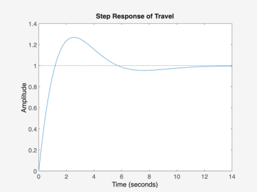

Contents
Lab Exercises –
clc;
Constants for Heli 4
Mh = 1.450; % Mass of Heli Body (kg) Mc = 1.918; % Mass of CW (kg) La = 25.75/39.37; % Distance from Pivot to Helecopter body center (m) Lb = 18.5/39.37; % Distance from Pivot to conterweight center (m) Lh = 6.933; % Distance from pitch axis to rotor center (m) Kf = 0.140; % Motor-Prop Force Constant (N/V) Krt = 0.0027; % Motor-Prop Torque Constant (Nm/V) epsilon = -26:1:30; % Elevation Range (Deg) epsilon_0 = -25.75; % Elevation Start (Deg) lambda = 0:1:360; % Travel Range (Deg) g = 9.81; % Gravity constant (m/s^2) Wh = Mh*g; % Weight of Heli Body (N) Wc = Mc*g; % Weight of CW (N) Je = (Mh * La^2) + (Mc * Lb^2) % Elevation Axis (kg-m^2) % Open loop transfer function G4_elev1 = tf(La*Kf, [Je, 0, 0]) G4_elev2 = tf(0.0294, [1.0000, 0.1538, 1.3288]) G4_elev3 = tf(0.0911, [1.0000, 3.1682, 1.7900, 4.0932]) G4_trav = tf(0.002362, [1 0 0]) % Closed loop transfer function T = tf(La*Kf, [Je, 0, 0] + La*Kf) % Load Sisotool data sisotool('SisoElev1.mat') % originaly sisotool('rlocus', G4_elev1) sisotool('SisoElev2.mat') % originaly sisotool('rlocus', G4_elev2) sisotool('SisoElev3.mat') % originaly sisotool('rlocus', G4_elev3) sisotool('Trav.mat') % originaly sisotool('rlocus', G4_trav)
Je =
1.0438
G4_elev1 =
0.09157
---------
1.044 s^2
Continuous-time transfer function.
G4_elev2 =
0.0294
----------------------
s^2 + 0.1538 s + 1.329
Continuous-time transfer function.
G4_elev3 =
0.0911
--------------------------------
s^3 + 3.168 s^2 + 1.79 s + 4.093
Continuous-time transfer function.
G4_trav =
0.002362
--------
s^2
Continuous-time transfer function.
T =
0.09157
-------------------------------
1.135 s^2 + 0.09157 s + 0.09157
Continuous-time transfer function.
Question 1
Root Locus and Step Response for Elevation 1
figure(1) image(imread("Elev1RL.png")) axis off figure(2) image(imread("Elev1SR.png")) axis off % Root Locus and Step Response for Elevation 2 figure(3) image(imread("Elev2RL.png")) axis off figure(4) image(imread("Elev2SR.png")) axis off % Root Locus and Step Response for Elevation 3 figure(5) image(imread("Elev3RL.png")) axis off figure(6) image(imread("Elev3SR.png")) axis off figure(7) image(imread("TravRL.png")) axis off figure(8) image(imread("TravSR.png")) axis off
Question 2
Tranfer functions
G4_elev1 = tf(La*Kf, [Je, 0, 0])
G4_elev2 = tf(0.0294, [1.0000, 0.1538, 1.3288])
G4_elev3 = tf(0.0911, [1.0000, 3.1682, 1.7900, 4.0932])
G4_trav = tf(0.002362, [1 0 0])
% PID gain values of each tranfer function
PID1 = pid(C1)
PID2 = pid(C2)
PID3 = pid(C3)
PID_Trav = pid(C_Trav)
G4_elev1 =
0.09157
---------
1.044 s^2
Continuous-time transfer function.
G4_elev2 =
0.0294
----------------------
s^2 + 0.1538 s + 1.329
Continuous-time transfer function.
G4_elev3 =
0.0911
--------------------------------
s^3 + 3.168 s^2 + 1.79 s + 4.093
Continuous-time transfer function.
G4_trav =
0.002362
--------
s^2
Continuous-time transfer function.
PID1 =
1
Kp + Ki * --- + Kd * s
s
with Kp = 4.12, Ki = 0.539, Kd = 10.1
Name: C
Continuous-time PID controller in parallel form.
PID2 =
1
Kp + Ki * --- + Kd * s
s
with Kp = 11.6, Ki = 15.9, Kd = 69.3
Name: C
Continuous-time PID controller in parallel form.
PID3 =
1
Kp + Ki * --- + Kd * s
s
with Kp = 12.1, Ki = 19.3, Kd = 39.8
Name: C
Continuous-time PID controller in parallel form.
PID_Trav =
1
Kp + Ki * --- + Kd * s
s
with Kp = 351, Ki = 63.4, Kd = 540
Name: C
Continuous-time PID controller in parallel form.
Question 3
Comlete closed loop transfer function
feedback_elev1 = feedback(G4_elev1*PID1, 1) feedback_elev2 = feedback(G4_elev2*PID2, 1) feedback_elev3 = feedback(G4_elev3*PID3, 1) feedback_trav = feedback(G4_trav*PID_Trav, 1)
feedback_elev1 =
0.9218 s^2 + 0.3769 s + 0.04935
-------------------------------------------
1.044 s^3 + 0.9218 s^2 + 0.3769 s + 0.04935
Continuous-time transfer function.
feedback_elev2 =
2.036 s^2 + 0.34 s + 0.4683
---------------------------------
s^3 + 2.19 s^2 + 1.669 s + 0.4683
Continuous-time transfer function.
feedback_elev3 =
3.623 s^2 + 1.106 s + 1.762
---------------------------------------------
s^4 + 3.168 s^3 + 5.413 s^2 + 5.199 s + 1.762
Continuous-time transfer function.
feedback_trav =
1.274 s^2 + 0.8292 s + 0.1499
-----------------------------------
s^3 + 1.274 s^2 + 0.8292 s + 0.1499
Continuous-time transfer function.
Question 4
Step response for elevation
figure(9) step(feedback_elev1, feedback_elev2, feedback_elev3) title('Step Response of Elevation') % Step response of travel figure(10) step(feedback_trav) title('Step Response of Travel')
Question 5
fprintf('Characteristic information of step response for elevation 1:') stepinfo(feedback_elev1) fprintf('Characteristic information of step response for elevation 2:') stepinfo(feedback_elev2) fprintf('Characteristic information of step response for elevation 3:') stepinfo(feedback_elev3)
Characteristic information of step response for elevation 1:
ans =
struct with fields:
RiseTime: 1.3502
TransientTime: 16.2627
SettlingTime: 16.2627
SettlingMin: 0.9552
SettlingMax: 1.2591
Overshoot: 25.9069
Undershoot: 0
Peak: 1.2591
PeakTime: 3.7764
Characteristic information of step response for elevation 2:
ans =
struct with fields:
RiseTime: 7.5014
TransientTime: 9.7511
SettlingTime: 9.7511
SettlingMin: 0.9001
SettlingMax: 1.0008
Overshoot: 0.0822
Undershoot: 0
Peak: 1.0008
PeakTime: 14.0644
Characteristic information of step response for elevation 3:
ans =
struct with fields:
RiseTime: 5.1223
TransientTime: 8.7398
SettlingTime: 8.7398
SettlingMin: 0.9068
SettlingMax: 0.9992
Overshoot: 0
Undershoot: 0
Peak: 0.9992
PeakTime: 13.7180
Question 6
%load elevationData1.mat %load elevationData2.mat %load elevationData3.mat time = elev1(1, 1:end); % Elevation 1 figure (11) hold on plot(CV1.time, CV1.signals(1).values) plot(CV1.time, CV1.signals(2).values) plot(CV1.time, CV1.signals(3).values) hold off title('Gain Voltage of Elevation 1') xlabel('Time (s)') ylabel('Voltage (V)') % Elelvation 2 figure (12) hold on plot(CV2.time, CV2.signals(1).values) plot(CV2.time, CV2.signals(2).values) plot(CV2.time, CV2.signals(3).values) hold off title('Gain Voltage of Elevation 2') xlabel('Time (s)') ylabel('Voltage (V)') % Elelvation 3 figure (13) hold on plot(CV3.time, CV3.signals(1).values) plot(CV3.time, CV3.signals(2).values) plot(CV3.time, CV3.signals(3).values) hold off title('Gain Voltage of Elevation 3') xlabel('Time (s)') ylabel('Voltage (V)')